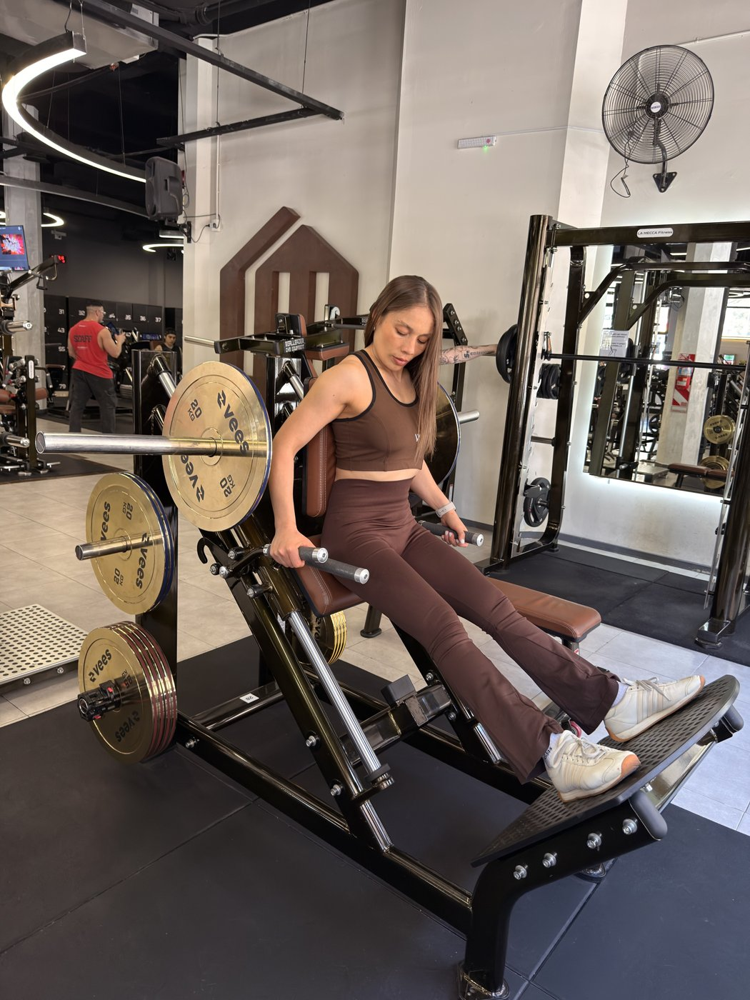

Soy Jimena Ibañez, Profesora Nacional de Educación Física y entrenadora especializada en fuerza femenina.
Trabajo con mujeres +35 que atraviesan cambios hormonales, como la perimenopausia o la resistencia a la insulina, y quieren recomponer su cuerpo sin extremos.
Soy entrenadora, no médica: si algo requiere diagnóstico o medicación, te lo digo y te derivo.
Alumnas en Argentina, Puerto Rico y Estados Unidos